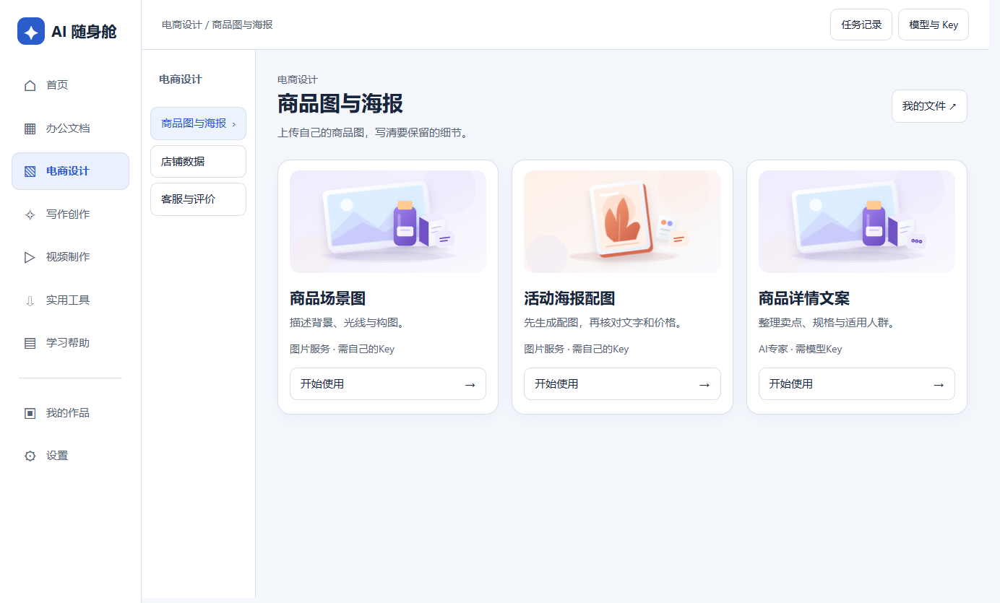
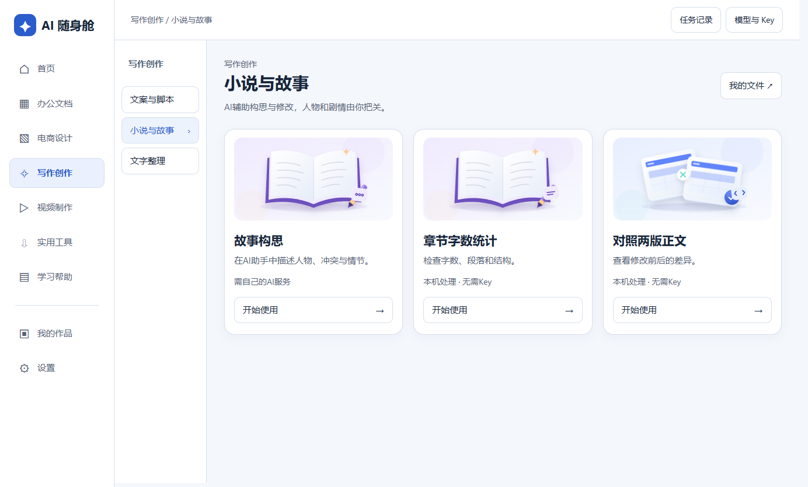
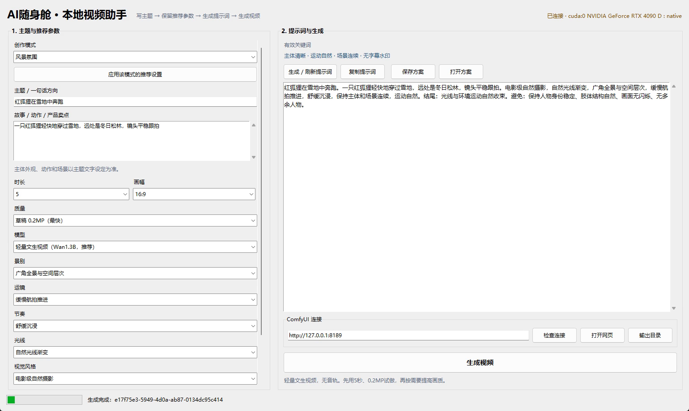

电商运营：先明确图片用途
以商品主图、海报等任务组织工具入口与使用说明，让用户从需要的产物开始找工具。
AI PRODUCT / 需求、体验与交付
把“我想完成一件事”，变成看得懂、找得到、能检查结果的任务入口。
为办公室用户、电商运营和文字创作者整理 AI 工具，让任务分类、环境准备和教程共同承接第一次使用。

PRODUCT JUDGMENT / 入口设计
表格要清理，文案要整理，小说要续写。以期望结果组织入口，减少用户先理解工具名和模型名的成本。
六类任务下再分子类，用插画和简短说明帮助识别；本地办公与需要第三方服务的生成任务说明各自使用条件。
当前版本免登录直接进入，不上传账号；为需登录或配置 API 的工具提供对应官网入口，保留用户自己的服务选择。
OFFICE / 从操作到结果
把逐行检查与手动分类，转成清理空行、去重和分类计数的明确动作；处理后先预览，再决定是否保存。
本地 CSV 工具可独立使用；教学数据用于验证流程，未据此估算真实工作节省时长。

SCENARIOS / 面向不同用户

以商品主图、海报等任务组织工具入口与使用说明，让用户从需要的产物开始找工具。

将文案与小说任务拆分到相应分类，从内容整理、大纲到写作需求逐步进入。
两图展示任务组织与入口设计。在线图片、文字 AI 需连接用户的自有账号或 API；分类界面不代表所有第三方服务已连接。
LOCAL VIDEO / 降低环境准备门槛
本地视频使用 Wan2.1 T2V 1.3B，将运行时与模型随包准备；首次使用由程序安装环境，再由助手引导检查、启动与生成。
以 5 秒、低分辨率作为首个可验证目标，先让流程闭合，再调整画面规格。
本机安装与生成已通过。视频依赖兼容的 NVIDIA 显卡，不能据此推定普通电脑都能直接生成。


归档验收使用 Windows 与 RTX 4090D 24GB，经助手实际生成狐狸雪地样片。展示生成结果的一帧，与任务界面及效果示意分开标注。
这是已有本机验收证据，本轮未重新实跑生成；不代表跨设备性能或所有素材质量。
OWNERSHIP / 产品判断与 AI 协作
这是产品设计与 AI 辅助研发实践，使用已有模型和第三方工具；个人职责不等同于手写全部代码或研发基础模型。
DELIVERY / 完整体验与验证范围
完整桌面程序、必要组件、使用说明、24 页 PPT 和中文配音教程随包整理，支持将整个应用目录复制到 U 盘。
用户教程与客服排障、甲方验收、维护资料分开，减少将开发材料直接交给使用者造成的干扰。
本机启动、CSV 结果预览、本地视频安装与 5 秒成片已验证；完整包的文件与校验记录留在本地归档。
本页依据 0.36.0-usb.1 的本地应用渲染、教学样例及已有验收归档整理。本轮未重新实跑应用；仅公开审核后的界面与样片帧，不公开原始工程、私人配置或完整软件包。
返回首页产品案例 ↑